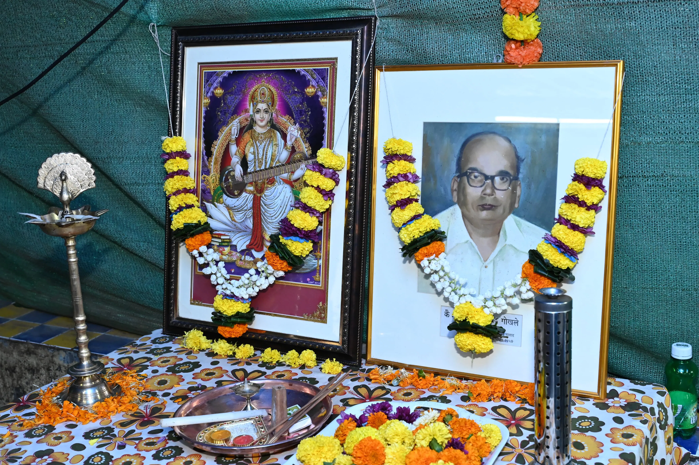

Sant Tukaram Pradnyavardhini
Formerly Sant Tukaram Salvation Mission, Malad
Formerly Sant Tukaram Salvation Mission, Malad
Established on 20th April 1950, Sant Tukaram Pradnyavardhini is a Public Charitable Trust dedicated to education, cultural preservation, and spiritual growth.
Learn About Our Founder
Founder of Sant Tukaram Pradnyavardhini
5 August 1917
9 May 1980
Initiator & Chief Founder
Led 7 other trustees
Shri B. R. Gokhale was the visionary initiator who took the lead in establishing Sant Tukaram Pradnyavardhini (erstwhile Sant Tukaram Salvation Mission, Malad) along with 7 other trustees. His leadership was instrumental in promoting Universal Brotherhood through propagation of Vedic Principles and setting the foundation for the trust's constitution adopted on 13th December 1953.
Under his guidance, the trust was registered at Thane [E-81 dated 1.1.1954] and subsequently at Mumbai [E4137 dated 19.12.1973], establishing a lasting legacy of education, cultural preservation, and spiritual growth that continues to thrive today.


Sant Tukaram Pradnyavardhini (erstwhile Sant Tukaram Salvation Mission, Malad) is a Public Charitable Trust, established on 20th April 1950 and was registered at Thane [E-81 dated 1.1.1954] and subsequently at Mumbai [E4137 dated 19.12.1973].
The Trust was established by the initiative taken by Shri B. R. Gokhale and 7 other trustees to promote Universal Brotherhood through propagation of Vedic Principles. The first constitution was adopted by the General Body on 13th December 1953.
To propagate universal brotherhood and friendship through education, cultural preservation, and spiritual teachings based on Vedic principles and the teachings of Maharshi Dayanand Saraswati and Sant Tukaram.
We envision a society where universal brotherhood is realized through the understanding and application of timeless Vedic principles, combined with modern education and cultural preservation.
We work through educational institutions, research centers, publications, seminars, and community activities to achieve our objectives of promoting harmony, education, and cultural understanding.
To propagate universal brotherhood through education, establishing Pre-primary to Higher secondary Schools, Residential schools, Hostels, Colleges and Institutions for Arts, Science, Commerce, Medical, Technological, Technical, Architecture, Skill development, Sanskrit and Vedic Pathshalas.
Establish Libraries, Gymnasiums, Yoga and Health Centers to promote physical and mental well-being alongside intellectual growth.
Establish Research Centers for the Studies in Indian Literature, Culture, Arts and History to preserve and promote India's rich heritage.
Organize Lectures, Workshops, Seminars, Forums, Publications, Exhibitions for propagation of its Objectives and sharing knowledge.
Propagate teachings of Maharshi Dayanand Saraswati and Sant Tukaram to promote spiritual growth and ethical living.
Promote universal brotherhood and friendship among all communities through shared values and collaborative initiatives.
stsmission@gmail.com
Gajanan Niwas, Off Liberty Garden Road No. 1, Opposite Trimurti Tower, Malad West, Mumbai – 400064
20th April 1950
Thane [E-81 dated 1.1.1954]
Mumbai [E4137 dated 19.12.1973]